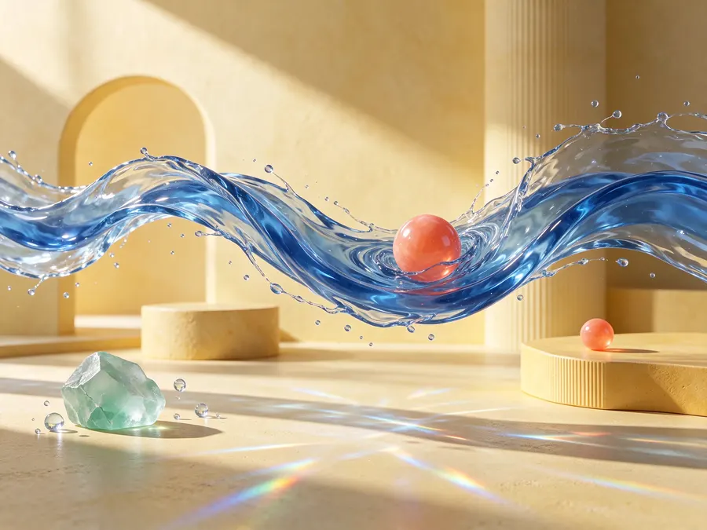
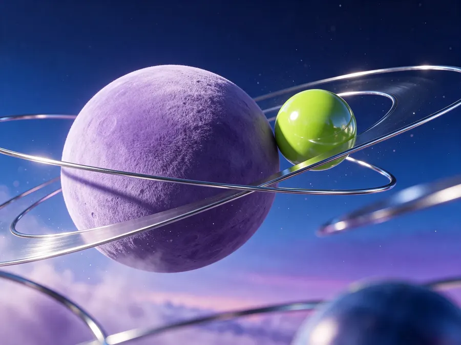

✦
Study 02 · 3D & depth
Orbit, gently
Move your pointer (or tilt a finger across). Each body drifts at its own depth.
A field guide of web motion studies, live shaders and micro-interactions. Each one comes with a copy-ready AI prompt and plain vanilla code. Paste it, tune it, ship it.
Motion is a materialSmall moves. Big feeling.
00 studies in the field
Nothing in the field matches that yet.
Six studies, running live
The six founding studies of the field, wired up for real. Scroll, hover, tap and drag: every panel here is the effect itself, not a picture of it.

with the tide of the
page.A new chapter arrives in focus.
Letters in the wind
Give the dial a nudge and watch a tiny world find its rhythm. The best motion knows when to hush.
00 live components
Not every build needs a whole page. A button that pulls toward the cursor, a card that catches the light. Try them right here, then copy the prompt.
00 GPU shaders, running live
Animated backgrounds drawn on the GPU in real time: mesh gradients, swirls, halftone tides and aurora. Open one to grab the fragment shader.
00 section blueprints
Heroes, pricing, bento grids and footers that already know how to move. Each blueprint is a prompt you can drop into the page you have.
00 UI screens
Dashboards, wallets and players, the places people live once they sign up. Motion here is quieter: it confirms, it guides, it never shouts.
The workflow 01 / 03
Three steps from a blank tab to a page that moves with intent. No boilerplate, no framework to learn first.
Filter the field by what the moment needs: a drift, a reveal, a pulse, a background that breathes. Preview everything live before you commit.
Every card carries a structured prompt for Claude, Cursor, v0 or Lovable, plus a plain snippet if you'd rather wire it yourself.
Tune the easing, test with reduced motion switched on, and deploy. The best motion knows when to hush.
Questions
Yes. Every study, prompt and snippet here is free to read, copy and remix in personal and client work.
No. The snippets are plain HTML, CSS and JavaScript. Where a library like GSAP or Lenis would help, the prompt says so, and you can ask your AI to use it.
They are written to be specific and structured, so they work well in Claude, Cursor, v0, Lovable and similar tools. Paste, then adjust the copy and colours to your brand.
Every prompt asks for a prefers-reduced-motion fallback, keyboard focus states and readable contrast. This site follows the same rules: switch reduced motion on and it calms right down.
Start moving today
One short note when a new issue of studies lands. Nothing else, ever.